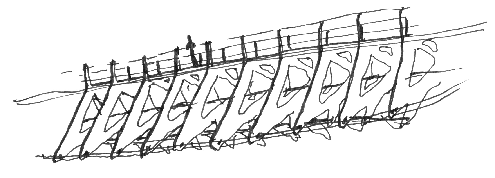
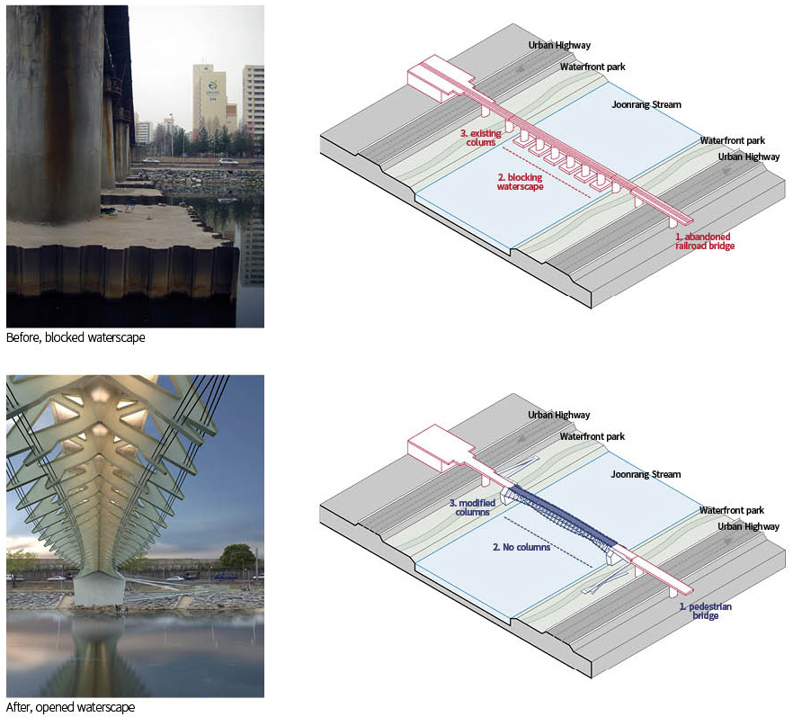
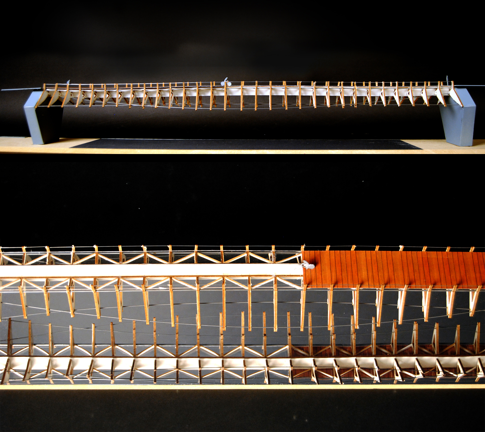

The project is to rebuild the old-train bridge into a pedestrian bridge to provide citizens with a pleasant waterfront space. The old-train bridge has many thick and huge columns which was blocking the waterfront view, but the main columns were sturdy enough to be re-used as main columns of the new pedestrian bridge. Structure system of the new bridge is undertension system with long span without columns between the two main columns.

Undertension system is very effective on vertical loads, but not effective on horizontal loads. Thus two wires, which has opposite direction of main wires of undertenstion system, are added to bear horizontal loads, such as wind load. The form of the bridge is not intended, but it is found from the structural system. The principle of designing the main form is making the line between the wires and eliminate the unnecessary parts of the bridge to reduce the weight of the bridge. This bridge has three design principles: 'From Old Train Bridge', 'No Columns, Undertension System Bridge', 'Re-Use Some of Exisiting Columns with Modification'.

Models are not just visualization tool of the final work. By testing, conforming, adjusting, and developing, models are the design tools integrated with digital tools. Computer can calculate information and show us data with geometry. This geometry can be realized with physical models. Repeating the process that computer calculate data, machine helps to convert these digital information into physical parts, design is adjusted and tested the model, and again these results affect the computer data, the bridge gets its own system and design. Various scale models also helped designers communicate with digital data, showing which detail parts are required to be designed. .
